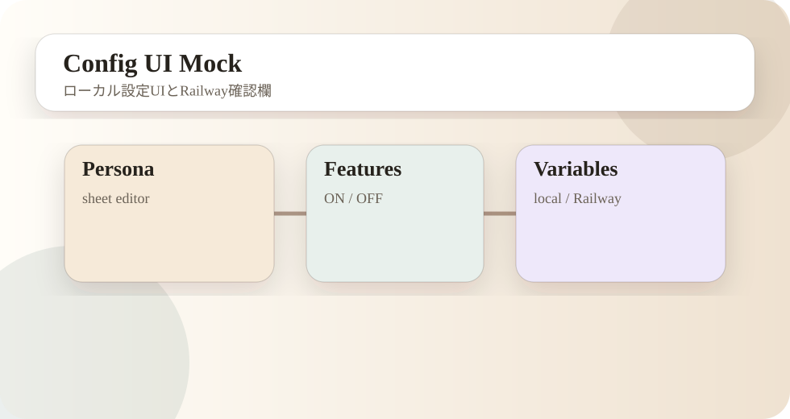

- 今回の更新概要
- 三体Plugin標準化
- Config UI最終調整
- Railway確認
- 記事サイト再構成
今回の更新概要
今回の作業では、虚無猫、シベリア・フジタ、空想アイの3体Pluginを、同じ構成、同じ運用単位、同じ確認手順で扱えるように標準化しました。以前は虚無猫だけが base-bot という名前のフォルダに残っており、実体としてはVoidcat用GitHub repoを向いているにもかかわらず、ローカル上では共通ベースなのか、虚無猫本体なのかが分かりにくい状態でした。
この状態は短期的には動きます。しかし、長期的には事故の温床になります。たとえば、フジタや空想アイは専用repoなのに、虚無猫だけ base-bot のままだと、どこに変更を入れれば本番へ反映されるのか、どのフォルダがテンプレなのか、どこを消してよいのかが毎回曖昧になります。今回の作業では、この曖昧さを消すことを最優先にしました。

三体Plugin標準化
標準化後は、3体とも「専用repo」「専用persona」「専用assets」の形に統一しました。これにより、各BOTの本番運用単位がそのままフォルダ名とGitHub repo名に対応します。
| Plugin | 標準化後のrepo | persona | assets | 役割 |
|---|---|---|---|---|
| 虚無猫 | mixi2-community-voidcat-plugin | personas/kyomu_neko | assets/kyomu_neko | Voidcat用の現役本番repo。 |
| シベリア・フジタ | mixi2-community-fujita-plugin | personas/fujita | assets/fujita | フジタ用の現役本番repo。 |
| 空想アイ | mixi2-community-nan_ai-plugin | personas/nanchatte_ai | assets/nanchatte_ai | 空想アイ用の現役本番repo。 |
虚無猫専用化で実施したこと
虚無猫は、もともと base-bot フォルダの中にありながら、GitHub remoteは mixi2-community-Voidcat-plugin を向いていました。つまりGitHub上では独立しているのに、ローカル名と中身が独立していない状態でした。そこで base-bot を mixi2-community-voidcat-plugin へ移し、不要な人格と素材を削除しました。
personas/
kyomu_neko/
assets/
kyomu_neko/削除したのは、Voidcat本番repoに不要な personas/base、personas/fujita、personas/nanchatte_ai、不要なassets群です。これは共通テンプレの削除ではなく、Voidcat専用repoから他人格の残骸を消す作業です。
Config UI最終調整
Config UIは、ローカルブラウザでpersona.jsonやローカル.env補助項目を編集するためのUIです。本番RailwayのVariablesを直接書き換えるものではありません。この前提を明確にするため、画面構成と文言を整理しました。

調整後の構成は、上部に人格選択、人格シート、機能ON/OFF、保存ボタンを置き、保存ボタン下にローカル.env補助設定とRailway Variables確認欄を折りたたみ表示する形です。これにより、よく触る人格編集と、注意して扱う環境変数系を分離しました。
一発起動batとショートカット
open-configui.bat を作成しました。番号選択でVoidcat、Fujita、Nan AI、Base templateを選び、go run ./cmd/configui を起動し、ブラウザで http://127.0.0.1:8787 を開く仕組みです。最初のbatは日本語を含んでいたため文字化けし、echo行が壊れて実行される問題がありました。最終版ではbatをASCIIにし、表示文言も英数字中心にして安定化しました。
1. Voidcat
2. Fujita
3. Nan AI
4. Base templateRailway確認
Railway側では、コードとGitHubの状態だけでなく、Deploy、Variables、Volumeを確認する必要があります。今回の確認では、VoidcatのSecretが空欄になっている問題、フジタだけVolume表示が出ない問題が見つかりました。
| 確認項目 | 状態 | 対応 |
|---|---|---|
| Voidcat repo | push済み | Deploy successfulを確認。 |
| Voidcat Secrets | MIXI2_CLIENT_SECRET と OPENAI_API_KEY が空欄 | Railway画面で実値復旧。 |
| Fujita Volume | Volume表示が見えない | /data Volumeを追加またはアタッチ確認。 |
| Nan AI Volume | 表示あり | Deploy成功とログ確認。 |
記事サイト再構成
旧docsは詳細記事が多い一方で、現在の標準構成とはズレが出ていました。そこでページ数を整理し、旧詳細記事のエッセンスを「作業記録」に再構成しつつ、機能一覧、コンフィグ項目、必要サービス、公式配布からオリジナルBOT化までの記事を追加しました。初回の再構成では作業記録と機能一覧が薄くなったため、今回の増補版では説明量を増やし、運用判断と機能仕様が追える内容にしました。